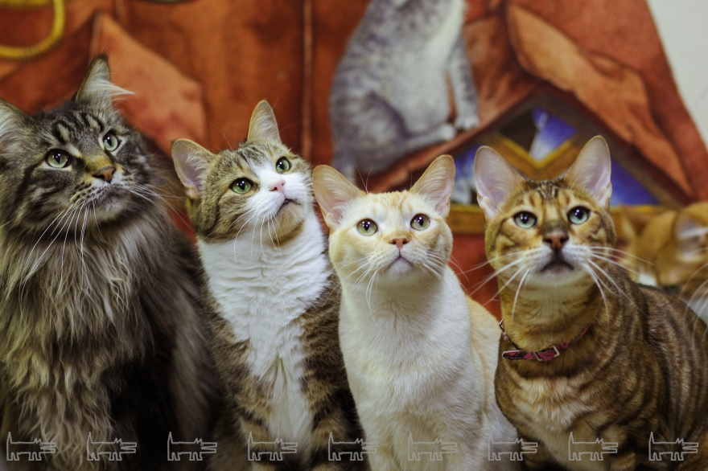

Пару фактов о котиках
Кошки — существа эксцентричные, и это одно из качеств, за которые их так любят. Они шпионят за хозяевами, подолгу сидят, уставившись в одну точку, и часами лежат, свернувшись клубочком, в тесных пространствах. Кошки любят коробки за то, что это безопасное место, где они могут укрыться от окружающей среды и хищников. Это не только картонные коробки. Они вообще любят прятаться в любых тесных пространствах, например под кроватями, в углу шкафа и даже в раковинах.
Многие думают о кошке как о меховом комочке, который так приятно держать на коленях и обнимать. Однако в её собственных глазах она — большая хищница, бродящая по саванне в поисках укрытия. Кошки любят втискиваться в небольшие пространства, чтобы чувствовать себя в безопасности, для них это намного лучше, чем подвергать себя опасности на открытых пространствах. Коробки обеспечивают тепло, подобное тому, которое котята получают от своих мам. Если у кошки есть специальная коробка для сна, можно положить в неё одеяло или мягкое полотенце для максимального комфорта.
Кошки очень ценят свой комфорт, но по природе своей они хищники, которые сохраняют дикие инстинкты, даже когда проживают со своими хозяевами в доме. Как отмечает Pet Health Network, кошки — хищники, которые нападают из засады, поэтому они прячутся в коробках, чтобы преследовать свою добычу, которой чаще всего становятся ваши ноги. Нужно предложить кошке игрушку из перьев или другую, которая может выполнять роль добычи.
Поскольку в основе связи между кошками и картонными коробками лежит комфорт, такие организации, как Best Friends Animal Society, рекомендуют делать для кошек, только что принесённых в новый дом, специальную коробку. У неё должно быть входное отверстие хотя бы с одной стороны, которое кошка сможет использовать в качестве укрытия, пока привыкает к новому месту. Безопасность уютного места с прочными стенами помогает снизить уровень стресса, связанного с новой обстановкой.
Это наблюдение сегодня подтверждается научными знаниями. Согласно исследованию, опубликованному в журнале Applied Animal Behavior Science, коробки действительно помогают избавиться от стресса.
Результаты исследования показали, что кошки, которым в приюте давали картонные коробки для использования в качестве укрытия, быстрее адаптировались к изменениям обстановки, чем те, которым не давали коробок. На основании этого учёные сделали вывод о том, что «коробки, где можно спрятаться, являются для кошек важным дополнением, позволяющим им эффективно справляться со стрессовыми факторами в новом приюте в первые недели после прибытия». Для владельцев домашних животных знание того, почему кошки любят спать в коробках и как это помогает им избавиться от стресса, является отличной новостью.
Помимо научного обоснования, нельзя не признать, что кошки просто любят проводить время в коробках. Коробка — это место, где питомица может поспать, посидеть и поиграть. Кошка может грызть или царапать стенки своего убежища, и никто не будет ругать её за это, как, например, за использование дивана в качестве когтеточки.